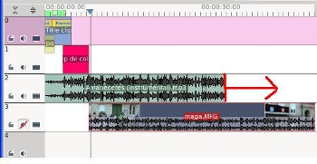

1.1. Proyecto Ejemplo 2
En este apartado vamos aprender como realizar nuestro primer proyecto.
Utilizaremos un fichero de audio, otro de video. generaremos un título y otros aspectos para generar un video final.
Nos iremos adentrando en el uso de transiciones, títulos, efectos y utilización de varias pistas al mismo tiempo. Cada uno de estos apartados serán estudiados con más profundidad en diversos temas de este curso.

1. Entra en Aplicaciones / Sonido y Video / Kdenlive.
2. Crearemos un proyecto nuevo denominado proyecto2. Entra en el Menú file / New. Indicaremos que nuestro video final es un HD 1080i, con 25 fps , con dos pistas de video y una de audio. Nuestro Fichero lo guardaremos en la carpeta proyecto_ejemplo de nuestra carpeta de usuario (si no dispones de esa carpeta la generas con antelación).
La carpeta /home/lliurex corresponde la carpeta (home) del usuario lliurex (Carpeta de inicio del usuario).
3. En la zona 1 (árbol del proyecto), utiliza el botón derecho del ratón y procedemos agregar un clip de color de 5 segundos.Este clip nos permite generar un video (clip) de un color o varios. Puede servirnos para poner fondo a losclips de título o para combinar o eliminar zonas de la línea de tiempo de otros clips.
- En la imagen inferior, entramos en (1) del arbol de proyectos, seleccionamos el color (2) y se despliega la paleta de colores (3). Modifica en (2) la duración del clip si lo deseas.
- Al darle Ok, disponemos de un clip de color en nuestro árbol de proyectos.
4. Una vez generado el clip de color, lo arrastramos a la línea del tiempo a una pista de video. Observa los dos tipos de pistas (sólo audio, de audio y video) y la forma como llevamos nuestros clips del árbol de proyectos a las pistas.
5. Crearemos un Clip de Título. Este tipo de clip se utiliza para ponerle títulos, comentarios y sobreimpresiones a nuestros proyectos. En la zona del árbol del proyecto / botón derecho / añadir clip de título. Seleccionamos en la barra de herramientas (a) el cuadrado para realizar un rectángulo con un fondo. El fondo lo seleccionamos en la zona inferior (b) tal como indica la imagen. al seleccionar el rectángulo en (3) debemos estirar para generar el tamaño del mismo.
- Seleccionamos (d) el botón de texto, modificamos (e) el tipo de letra, el tamaño (f), el color (g), la calidad (h) y hacemos clic en la zona de escritura (i), justo donde anteriormente habíamos generado el cuadrado con un fondo. Dale a Ok.
- Arrastra el nuevo clip hacia la otra pista de Video.
- Observa que las dos pistas de video contienen un clip de colores y un clip de título. Trata de ubicar el clip de título en la posición intermedia (2,5 segundos) del video de la pista 0 (superior).
-
Ubica (j) la guia de posición al comienzo del video. Observa que el clip de texto se encuentra desplazado, aproximadamente, hasta la mitad del clip anterior. Dale al play (k) del monitor del proyecto y observarás que el texto no lo puedes visualizar hasta finalizar el clip de color.
-
-
Si observas el clip del título se debe a que tienes activa la pista 1. Para saber la pista activa es la que se muestra más oscura, en este caso el color rosáceo lo dispone la pista 0. Para activar una pista haz clic con el ratón encima de ella o utiliza los botones de arriba y abajo de tu teclado para mover el control de la pista activa.
-
6. Intercambia los clips: en la primera pista (pista 0) ubica el clip del texto y en la segunda pista (pista 1) el clip de color. Repite el play y observarás como ves el texto con el fondo del clip de color. Para intercambiar, utiliza el ratón y desplaza los clips entre las pistas.
7 . Insertaremos un fichero de audio para poner de fondo a nuestro proyecto. En el árbol de proyectos (1) / botón derecho / añadir clip. Localizamos la carpeta con nuestro fichero mp3 (2), lo seleccionamos y abrimos (open). Ya tendremos en el árbol (1) un nuevo clip de sonido.
- Recuerda de utilizar ficheros de música libre o con licencia compartidas
- Arrastra el clip de audio hacia una pista de audio (en este caso la pista 2). Tal como puedes apreciar (y se puede apreciar en el punto 4 de este ejemplo) en la imagen inferior (l) la diferencia entre una pista de video y audio es el icono de película.
8. Cortar un Clip en una pista de la Línea de Tiempo. Nuestro clip de audio es demasiado grande para este video. Ejemplo: sólo requerimos de 30 segundos. Seleccionamos con el marcador de posición el segundo 30 (M). Botón derecho y Cortar clip.
- Una vez cortado el clip, desplaza un poco hacia la derecha desde la posición de corte (N). Selecciona el corte (derecho) y utiliza el botón suprimir o botón derecho / eliminar objeto seleccionado para que desaparezca el trozo del fichero de audio que nos sobra.
9. Deseamos añadir un Clip de Video. Pero una vez añadidos los clips anteriores (color y título) no disponemos de ninguna pista de video. Observa que la pista que nos queda libre es de audio. Podríamos ubicar nuestro clip de video en cualquiera de las pistas de video (0 o 1), pero vamos a agregar una pista nueva a nuestro proyecto y la ubicaremos debajo de la actual pista 2.
- Observa que el clip de sonido lo hemos ubicado en una pista de video y audio (2). Ello se debe a que los clips de video, normalmente, cuenta con sonido.
- Para añadir una pista nueva: Proyecto / Pistas / insertar pista. Indicamos que deseamos insertar la pista después de la 2 (pista de video).
- Ahora disponemos de una nueva pista de Audio y Video.
10. Añadimos un Clip de Video a la pista 3 (Audio/Video).
- En la zona (O) de árbol de proyectos / botón derecho / agregar clip y localizamos (P) nuestro fichero de video que deseamos agregar (Q) y lo abrimos (R). En la zona (O) tendremos el clip de video cargado.
- Arrastra tu clip de video a la pista 3. Debido a que tenemos un fichero de Audio en la pista 2, no deseamos que el sonido de nuestro video final forme parte de nuestro video final.
- Necesitamos silenciar la pista que contiene el clip de video. Haz clic en la zona indicada para anular o silenciar el sonido de tu video para que, al momento de la reproducción, el clip de sonido sea el que se escuche. Desplaza el clip de video, aproximadamente, al final del clip de color. Dale al play en la zona del monitor y observa el resultado.
11. Igualamos la pista de audio y la pista de Audio/Video para que tenga sonido de fondo desde el inicio hasta el final. Para ello estiramos la pista 2 de nuestro clip de música.
| ANTES DE IGUALAR | DESPUÉS DE IGUALAR |
|  | |
|
Observa que hemos puesto la pista 2 desde el comienzo de la línea de tiempo para que incluya el sonido de fondo los clips de título y de color. |
|
12. Guarda tu proyecto antes de proceder a Renderización o Generación de Video final.
13. Para producir nuestro video editado, producto de la mezcla de varios clips: Proyecto / Generar Video.
Selecciona (T) el tipo de formato, modifica el nombre del fichero (S) (dentro de la entrada de Fichero de Salida) con proyecto2.m2t y procede a generar el fichero. No te olvides de exportar el audio.
- Este proceso puede tardar varios
minutos. Depende de la velocidad de proceso y del tamaño del video.
14. Una vez finalizado el proceso, entra en la carpeta indicada en el apartado anterior como fichero de salida, y reproduce tu video proyecto2.m2t.
Jo.R.C.A. 2004 - 2011

Edición de Audio y Video con Software Libre by José Ramón Cerdeira Alonso is licensed under a Creative Commons Reconocimiento-No comercial-Compartir bajo la misma licencia 3.0 España License